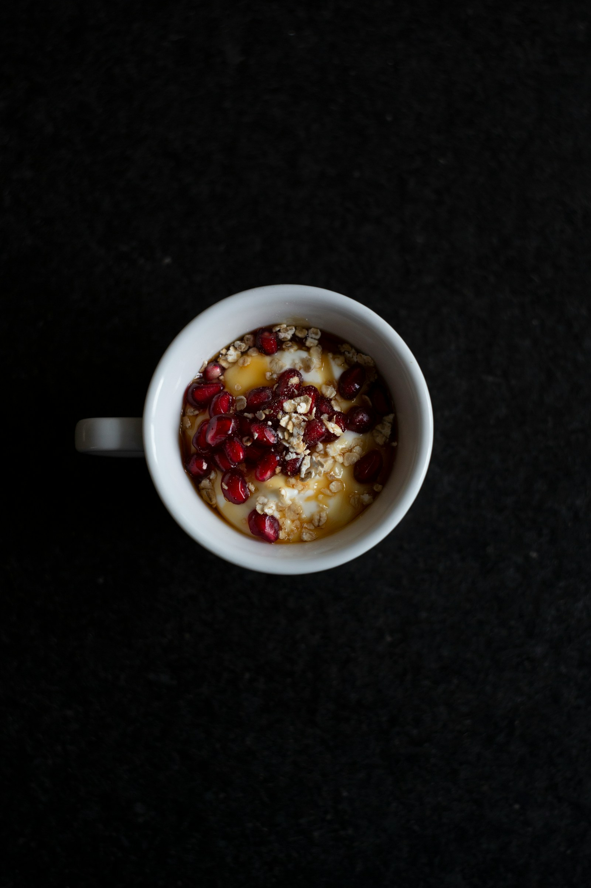

Sunflower seed and pale honey announce the Horizon Reserve with an openness that is, in the best sense, immediately engaging. Unlike the austerity of the Mancan at this stage of evaluation, the Horizon presents itself with a generosity of spirit that does not sacrifice intellectual credibility. Limestone dust drifts beneath the aromatic canopy like the memory of a quarry long since returned to meadow. There is something almost pastoral here — a cultivar at ease with its own considerable competence.
Open and generous with a pleasant weight that fills the palate without demanding submission. The mid-weight body carries a toasted oat character that distinguishes Horizon from its iron-edged Mancan sibling; this is warmth rather than severity, a cultivar that rewards conviviality. The finish is long — thirty-plus seconds — resolving on a note of pale slate and raw grain that is satisfying in its completeness. A cultivar of honest ambition and real achievement.
Horizon Reserve at its best occupies a happy middle ground between the hedonistic accessibility of everyday Allegheny cultivars and the severe grandeur of the Reserve tier. It earns its 93 by being, consistently, exactly what it intends to be.
Horizon was introduced by Pennsylvania State University in 1990 as a high-yield, disease-resistant variety suited to the plateau's variable conditions. The Reserve program at Clearfield County's Westbrook Estate selects the top 20% of each harvest by groat weight and shell integrity. Farming is certified biodynamic since 2014. The 2020 vintage benefited from an exceptionally cool August, preserving the natural acidity and mineral character that distinguishes Horizon from more forward competitors.
| Vintage | Score | Notes |
|---|---|---|
| 2020 | 93 | Outstanding. Cool August preserved structure beautifully. |
| 2019 | 90 | Excellent. Generous year; forward and pleasurable. |
| 2018 | 91 | Excellent. Excellent structure; slightly warm on the nose. |
| 2017 | 88 | Very Good. Rain-affected late harvest. |
| 2016 | 92 | Outstanding. The previous high-water mark for the estate. |
Horizon Reserve's pastoral warmth makes it a natural companion to a farmhouse cheese board: aged cheddar, a firm Gouda, and a runny Epoisses arranged on a slate with honeycomb. Roasted root vegetables with herbs de Provence provide an earthy foil. A spiced pumpkin soup serves the cultivar's autumn character admirably in informal settings.
Wax-sealed kraft tins. Cool dry storage at 10-15°C. Optimal window: 4-10 months. The 2020 Reserve shows no decline at 18 months; an encouraging development for a mid-tier Allegheny cultivar.